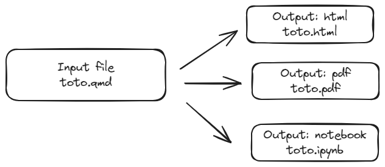

Creating educational resources for sspcloud users
Startup guide
This tutorial aims to be a practical guide for people building R or Python educational resources and wishing to facilitate access to them through the SSPCloud.
It requires a minimum knowledge on:
- A minimum level of proficiency in Git is required to develop and make available online training resources. However, this facilitated provision of resources does not imply that trainees are familiar with Git.
Quartothe automated report and website builder inherited from R MarkdownSSPClouddocumentation, in particular the fundamental difference between making resources available for execution on a local computer or on a server like the SSPCloud.- Some knowledge regarding deployment of resources using
Github Actionsare useful. This tutorial gives a few templates but understanding them is not in the scope of that tutorial.
The aim of this tutorial is also to propose a minimal template to get you started more quickly on building educational resources that are state-of-the-art in terms of reproducibility.
Why share educational resources on SSPCloud?
Sharing educational resources on SSPCloud offers several advantages, particularly for educators and learners working with computational tools like R or Python. Here are the key benefits:
Access to Computational Resources
By hosting educational resources on SSPCloud, users can leverage powerful computational resources provided by the platform. This is especially valuable for running intensive data analyses, simulations, or machine learning models without requiring high-performance local machines.Access to a Standardized Environment
SSPCloud provides a pre-configured and standardized environment with the necessary packages, libraries, and system dependencies. This minimizes the common issues of version mismatches and missing dependencies, ensuring that all users have a consistent setup to work from, regardless of their local configuration.Simple Launch via an HTTPS Link
Resources on SSPCloud can be accessed and launched with a simple HTTPS link. This eliminates the complexity of manual setup or configuration, enabling users to start working with the resources almost instantly, directly in their browser.
As the SSPCloud documentation explains, it’s important to understand that with this platform, code (Git), data (S3) and configuration are stored separately, while the compute space brings these three elements together. For training designers, this makes resources highly reproducible, with full control over the environment. For the users of these resources, it means that they no longer have to install software, play with their machine’s rights, etc., before they can get started on the tutorial.

Step 1: creating resources with Quarto
Quarto is an open source program for creating Python and R tutorials. It can handle many output formats, including html, pdf or notebook (.ipynb extension).

We’re going to make the following assumptions about the way in which training is made available:
- In Python, we assume that the training will be made available in the form of a notebook. This is the standard delivery method for Python code.
- In R, notebooks are not frequently used, so we assume that the training will be made available in the form of an RStudio project.
The next paragraphs explain how to create the starting tutorial, depending on whether you want to write R or Python resources. It’s important to distinguish between the actions to be taken here and those that will be required of training users. For the latter, more direct ways of retrieving the training resource will be possible.
SSPCloud is useful for trainees but also for trainers. It is quite convenient to use that plateform when developing educational resources: given the way it works, this will help a lot to make your educational resources reproducible.
The easiest way to do this is to start with an environment equivalent to that used for training: the sspcloud. To do this, open a service with this link: https://datalab.sspcloud.fr/launcher/ide/rstudio?name=rstudio&version=2.1.13&s3=region-ec97c721&networking.user.enabled=true&autoLaunch=true
Fork repository to get your own editable template.
We assume you’re cloning that repository using RStudio clone button

When developing Quarto resources, it is easier to use VSCode than Jupyter. This does not mean that you are forcing your trainees to use VSCode, they will be able to open your output with Jupyter.
Open a service with this link: https://datalab.sspcloud.fr/launcher/ide/vscode-python?name=vscode-python&version=2.1.18&s3=region-ec97c721&networking.user.enabled=true
Fork repository to get your own editable template.
We assume you’re cloning that repository
git clone XXXXXYou can delete resources/r.qmd. Open and have a look to resources/python.qmd in your local repository.
Depending on the language you want to use, you can lighten the repository of unnecessary elements.
You can delete resources/python.qmd.
Open, have a look to and update resources/r.qmd in your local repository.
You can delete resources/r.qmd.
Open, have a look to and update resources/python.qmd in your local repository.
Now assuming you want to give access to your resources as an html website, from command line you can preview your website using
quarto preview --port 5000 --host 0.0.0.0Then go to https://datalab.sspcloud.fr/my-services, open the README of the service you use and click on the section regarding external port opened [capture à faire].
You can jump to next session
It makes more sense to provide your trainees with a jupyter notebook. To generate it, you can write
quarto render --to ipynbNotebooks will be written in the _site folder
We’ll now assume that you’re satisfied with the resources you’ve built and want to make them available to your trainees.
Make your resources available
First push on main. Then create a github pages branch
git checkout --orphan gh-pages
git reset --hard # make sure all changes are committed before running this!
git commit --allow-empty -m "Initialising gh-pages branch"
git push origin gh-pagesTo generalize the previous approach, we need to automate output construction through github actions.
Replace content of .github/workflows/prod.yml by content stored inside resources/workflows/r.yaml
Replace content of .github/workflows/prod.yml by content stored inside resources/workflows/python.yaml
Push your repository, observe the content deployed using Github pages.
Make a ready to use link to your resources
List your resources on the training portal
TO DO